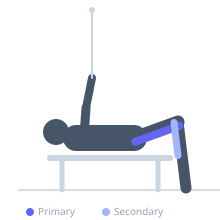
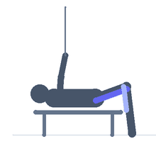

Exercise guide / Lying Single-Leg Cable Knee Curl
Lying Single-Leg Cable Knee Curl
The lying single-leg cable knee curl attaches a cuff to the ankle and uses the low cable pulley to provide constant tension throughout the curl, unlike the lying leg curl machine which has variable resistance. Training one leg at a time addresses imbalances. The cable provides resistance from a consistent angle, training the hamstrings in a slightly different tension curve than a machine.
Primary muscles
biceps femoris long head
biceps femoris short head
semitendinosus
semimembranosus
Secondary muscles
gastrocnemius medial
Equipment
Cable Machine (Low Pulley)


Starting position
- Attach an ankle cuff to the low cable pulley. Lie prone on a flat bench placed in front of the cable stack. Attach the cuff to one ankle, leg extended.
Setup
- Position the bench a few feet in front of the cable machine so the cable pulls the ankle directly away from the machine at floor level.
Steps
- Step 1: Lie face-down on the bench, ankle cuff attached.
- Step 2: Curl the working leg upward by bending the knee, pulling the cable against resistance.
- Step 3: Curl until maximum knee flexion is reached.
- Step 4: Lower the leg slowly back to the starting position, maintaining cable tension throughout.
Coaching cues
- Hips pressed into the bench
- Lead with the heel toward the glute
- Feel the stretch at the bottom
Breathing
- Exhale on the curl, inhale on the return.
Range of motion
- Full extension to maximum knee flexion. The cable maintains tension throughout — do not rush.
Tempo
- 2-1-3-0
Common mistakes
- Hips rising off the bench to generate momentum
- Not controlling the eccentric phase
Safety
- Ensure the ankle cuff is securely fastened before beginning
Training
- hypertrophy: 10–15 reps
- endurance: 15–25 reps
- hypertrophy: 3–4 sets
- endurance: 2–3 sets
- Rest: {'hypertrophy': 75, 'endurance': 45}